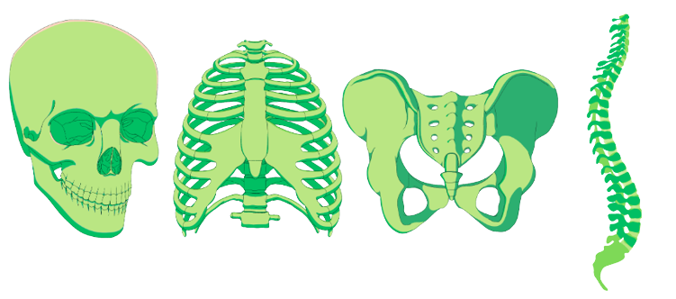

Componentes del esqueleto
axial
Esqueleto
Funciones
Anatomía

ESQUELETO AXIAL
Consta de 80 huesos y compone el eje central del cuerpo humano...
FUNCIONES
Protege y sostiene las partes más vitales del
organismo...
ANATOMÍA
Está constituido por 5 partes principales...